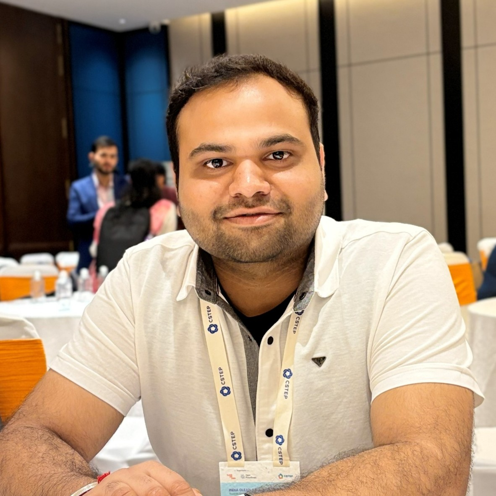

PhD Researcher — Environmental Engineering
Indian Institute of Technology Gandhinagar

I am a PhD researcher at the Indian Institute of Technology Gandhinagar, working at the intersection of environmental monitoring, Internet-of-Things (IoT), and artificial intelligence. My research focuses on designing and deploying low-cost sensor networks for ambient air-quality surveillance and leveraging AI/ML techniques to calibrate, model, and forecast pollutant concentrations at fine spatio-temporal resolutions.
I hold an M.Tech in Environmental Engineering from IIT Ropar. My current work spans deep-learning-based spatio-temporal modelling, network-level sensor calibration, and predictive analytics for atmospheric understanding — ultimately aimed at enabling data-driven decisions for public health and environmental policy.
Indian Institute of Technology Gandhinagar
Air pollution monitoring & modelling · Low-cost IoT sensor network deployment · AI/ML-based network calibration · Deep-learning spatio-temporal modelling · Atmospheric analysis & predictive modelling
Indian Institute of Technology Ropar
Environmental Engineering
Real-time ambient air-quality surveillance using ground-based measurement networks to track pollutant dynamics across urban and peri-urban landscapes.
Design, deployment, and evaluation of affordable Internet-of-Things sensor nodes for spatially dense, scalable air-quality monitoring infrastructure.
Machine-learning pipelines for field calibration of low-cost sensors against reference-grade instruments, improving measurement accuracy at scale.
Graph neural networks, ConvLSTMs, and transformer architectures for high-resolution spatio-temporal pollutant concentration estimation and forecasting.
Data-driven exploration of atmospheric processes including source apportionment, meteorological influence assessment, and emission trend analysis.
Forecasting air quality indices and pollutant concentrations to support early-warning systems, public health advisories, and policy interventions.